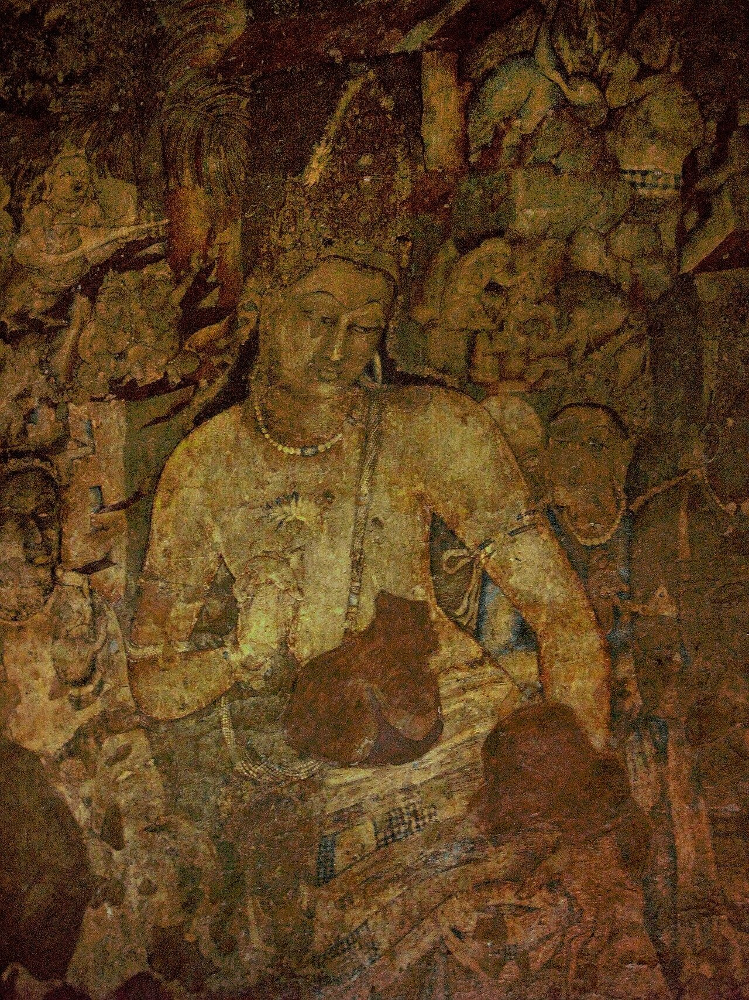
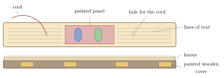
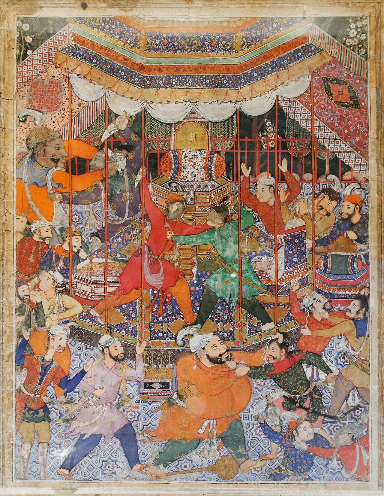
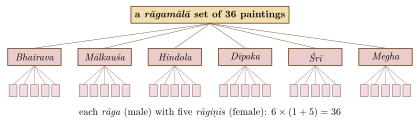
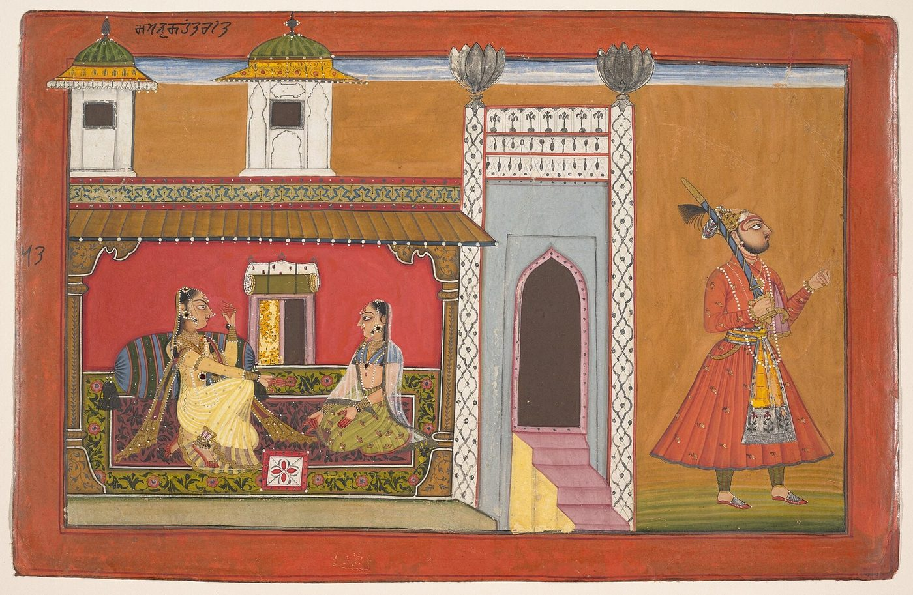

Chapter 14: Painting Traditions¶
14.1 Painting in the Indian Arts¶
Painting (citra) was practised in India on walls, cloth, wooden boards, palm leaves, paper and the human body, at courts, in temples and monasteries, and in homes and villages. Sanskrit literature takes for granted that cultivated men and women could paint: the Kāmasūtra includes drawing and painting (ālekhya) among the sixty-four arts, and plays and poems describe lovers painting portraits of each other and palaces with painted galleries (citraśālā). Most of this painting, especially that on perishable materials, is lost. What survives, the wall paintings of Buddhist and Jain caves and of temples and palaces, illustrated manuscripts, and paintings on paper and cloth from the 11th century onward, is nonetheless one of the great painting traditions of the world (Dehejia 1997; Mitter 2001).
14.2 Painting in Literature¶
Sanskrit and Prakrit literature is the best evidence for the painting that has not survived. In Kālidāsa’s play Abhijñānaśākuntala, the king, in the sixth act, consoles himself with a portrait of Śakuntalā that he has painted himself, and discusses what remains to be added to it; in other plays and stories, lovers fall in love with portraits, and portraits are used to arrange marriages. Kings and wealthy citizens had painted halls (citraśālā) in their palaces, and painters carried painted cloth scrolls from place to place to tell stories, as some folk painters still do (below). Buddhist and Jain texts mention painted halls in monasteries and the painting of narrative scenes. These references show that painting was a widespread art of court and city long before the earliest surviving manuscripts.
14.3 Texts on Painting¶
14.3.1 The Six Limbs¶
A list of six “limbs” of painting (ṣaḍaṅga) is often attributed to Vātsyāyana’s Kāmasūtra. In fact it occurs in the commentary on the Kāmasūtra called Jayamaṅgalā, by Yaśodhara (13th century), who quotes it from an earlier source (Table 14.1):
| Term | Usual interpretation | |
|---|---|---|
| 1 | rūpabheda | The distinction of forms |
| 2 | pramāṇa | Correct measure and proportion |
| 3 | bhāva | Expression of feeling |
| 4 | lāvaṇyayojana | The infusion of grace or charm |
| 5 | sādṛśya | Likeness |
| 6 | varṇikābhaṅga | The handling of colour and brush |
These terms were made famous by Abanindranath Tagore’s essay Sadanga, or the Six Limbs of Painting (1921) (Tagore 1921) and have been widely discussed; but they are a brief list, not a developed theory, and their exact meaning is uncertain.
14.3.2 The Citrasūtra¶
The most important Sanskrit text on painting is the Citrasūtra, chapters 35 to 43 of the third book of the Viṣṇudharmottara Purāṇa (c. 5th–8th century; proposed dates vary), framed as a dialogue between the sage Mārkaṇḍeya and King Vajra (Sivaramamurti 1978). In its introduction Vajra asks to be taught image-making and is told that it cannot be understood without painting, nor painting without dance, nor dance without instrumental music, nor that without song: the arts depend on each other. The text deals with the proportions of human figures, classified into five types; the measurement of the parts of the body; the depiction of figures in different postures and from different angles; the preparation of the wall and of colours; four kinds of painting (satya, vaiṇika, nāgara and miśra); shading and modelling; the depiction of the nine sentiments (rasa) of dramatic theory; and the qualities and faults of painting. It declares painting to be the foremost of the arts.
14.3.3 Other Texts¶
Some other Sanskrit sources on painting are listed in Table 14.2.
| Text | Date | Content |
|---|---|---|
| Viṣṇudharmottara (Citrasūtra) | c. 5th–8th c. | Systematic treatise on painting |
| Citralakṣaṇa of Nagnajit | date uncertain | Proportions of figures; preserved mainly in Tibetan |
| Samarāṅgaṇasūtradhāra | 11th c. | Chapters on painting and its proportions |
| Mānasollāsa (Abhilaṣitārthacintāmaṇi) of Someśvara III | 1131 | Encyclopaedia of royal life, with a section on painting |
| Śilparatna | 16th c. | Kerala; chapters on painting |
14.4 Wall Painting¶
14.4.1 Ajaṇṭā¶
The paintings of Ajaṇṭā are the most extensive surviving body of early Indian painting. A few fragments in the early caitya halls (caves 9 and 10) belong to the 1st century BCE or the following centuries; most of the paintings date from the second phase of excavation in the later 5th century CE (Chapter 3) (Spink 2005). They cover the walls, pillars and ceilings of the monasteries and halls with scenes from the life of the Buddha and from the jātakas, figures of Buddhas and bodhisattvas, and decorative ceilings. The best known include the great bodhisattvas, usually called Padmapāṇi and Vajrapāṇi, flanking the shrine doorway of cave 1 (Figure 14.1), and the narrative walls of caves 1, 2, 16 and 17.
The paintings were made on a ground of clay or earth mixed with vegetable fibre and rice husk, covered with a thin coat of lime, and painted when the surface was dry (a secco technique, not true fresco). The palette consists mainly of earth and mineral pigments: red and yellow ochres, green earth, carbon black, white, and lapis lazuli for blue. Figures are drawn with a sensitive, modulated line and modelled with shading; narratives are arranged continuously across the wall, the same figure appearing more than once, with buildings and landscape used to separate episodes. The painters depict the life of courts and cities in rich detail.


14.4.2 Bāgh, Bādāmi and Sittannavāsal¶
The Buddhist caves at Bāgh in Madhya Pradesh (5th–6th century) had paintings closely related to Ajaṇṭā, including a procession of musicians and riders; most surviving fragments were removed for conservation and are now in museums. Cave 3 at Bādāmi (late 6th century) preserves traces of painting. The Jain cave at Sittannavāsal in Tamil Nadu has ceiling paintings of a lotus pond with fish, birds, elephants and figures gathering flowers, and dancing figures on the pillars; they are now usually dated to the 9th century, under the Pāṇḍyas, although they were once attributed to the Pallava king Mahendravarman I.
14.4.3 Ellora, Thanjavur and Later Wall Painting¶
The Kailāsa temple at Ellora preserves several layers of painting. At the Bṛhadīśvara temple in Thanjavur, Chola paintings of the early 11th century, including Śiva as Tripurāntaka, the saint Sundarar’s ascent to Kailāsa, and dancers, survive in the inner ambulatory beneath a later layer of Nāyaka painting (Chapter 5). At Vijayanagara and in Nāyaka temples, such as Lepākṣī in Andhra (16th century), large painted ceilings show epic narratives with figures in profile and patterned textiles. In the western Himalaya, the Buddhist monasteries of Alchi in Ladakh and Tabo in Spiti preserve extensive wall paintings of the 10th to 13th centuries in styles related to Kashmir.
14.4.4 Kerala Murals¶
Kerala has a rich tradition of wall painting in temples and palaces, mostly of the 16th to 19th centuries, with earlier examples. The best known are in the Mattancherry Palace at Kochi, with large Rāmāyaṇa scenes of the 16th–17th century; the Padmanābhapuram Palace; the Krishnapuram Palace, with a great painting of Gajendramokṣa; and temples such as Vaḍakkunnāthan at Thrissur and Ettumanur. The style is distinctive: large, full figures with richly ornamented crowns and garments, filling the surface densely, painted in a restricted palette dominated by red and yellow ochre, green, black and white. The walls were prepared with layers of lime plaster, and the paintings executed with mineral and vegetable colours bound with plant gums; the drawing was first laid out in light colour and then strengthened with dark outlines, and the figures filled with flat colour and subtle shading. The subjects are drawn from the epics, the Purāṇas and the devotional literature of Kerala, with large icon-like figures of deities and crowded narrative scenes. The tradition has been revived since the late 20th century, notably at the Guruvayur institute for mural painting.
14.5 Manuscript Painting¶
14.5.1 Eastern India and Nepal¶
The earliest surviving illustrated manuscripts in India are Buddhist palm-leaf manuscripts from Bihar and Bengal, of the 10th to 12th centuries, most often of the Aṣṭasāhasrikā Prajñāpāramitā. Their small paintings, set in the text and on the wooden covers, show Buddhas, bodhisattvas, Tārās and scenes of the Buddha’s life in a style close to Pāla sculpture (Huntington and Huntington 1990). The tradition continued in Nepal, and influenced Tibetan painting.
14.5.2 Odisha and Assam¶
Two regional traditions of the book developed far from the courts of the north. In Odisha, palm-leaf manuscripts, most of those that survive dating from the 17th to the 19th century, were made by incision: text and pictures were scratched into the leaf with an iron stylus, and the lines were made visible by rubbing the leaf with lamp black, sometimes with touches of colour added. Illustrated manuscripts of Jayadeva’s Gītagovinda and of Odia devotional poems are drawn in the same lively narrative manner as the painted cloths (paṭṭacitra) of Puri (Section 14.12). In Assam, the Vaiṣṇava monasteries (satra) founded in the tradition of Śaṅkaradeva and the Ahom court produced illustrated manuscripts on folios prepared from the bark of the sāñci tree, among them, in the 18th century, the Hastividyārṇava, an illustrated treatise on elephants made for the Ahom king.
14.5.3 Western India¶
In Gujarat and Rajasthan, Jain manuscripts were illustrated from the 11th century, on palm leaf and, from the late 14th century, on paper. The most frequently illustrated texts are the Kalpasūtra, with the lives of the Jinas, and the Kālakācāryakathā. The style, sometimes called “Western Indian” (formerly “Apabhraṃśa”), uses flat, bright colours (red, blue, gold), angular figures, and a characteristic face in three-quarter view with the further eye projecting beyond the profile (Doshi 1985). The same style was used for Hindu manuscripts such as the Bālagopālastuti and for secular texts.
14.5.4 Palm Leaf, Paper and the Book¶
The format of Indian manuscripts shaped their painting. Palm-leaf manuscripts are long and narrow, held together by cords passed through holes, and their paintings are small panels set among the lines of text; the wooden boards that protected them were painted too (Figure 14.2).

Paper, made in India from about the 13th or 14th century onward, came into general use for manuscripts in western India by the late 14th century; at first it kept the long, narrow format of palm-leaf books, and only gradually, under Persian influence, did the bound book (kitāb) and the album page become common in courtly painting. Cloth was used for large paintings, temple hangings and scrolls throughout.
14.5.5 Sultanate Painting¶
Illustrated manuscripts were also produced at the courts of the sultanates of Delhi, Mālwā, Jaunpur and Bengal in the 15th and early 16th centuries, combining Persian models with Indian traditions. The Niʿmatnāma, a book of recipes and pleasures made at Māṇḍū for the sultans of Mālwā around 1500, and the Caurapañcāśikā group of paintings, with their bold, flat colours, show the variety of styles current before the Mughals.
14.6 Mughal Painting¶
Mughal painting was created in the imperial workshops of Akbar (r. 1556–1605), Jahāngīr (r. 1605–1627) and Shāh Jahān (r. 1628–1658) (Beach 1992). Akbar’s workshop, led at first by two Persian masters, Mīr Sayyid ʿAlī and ʿAbd al-Ṣamad, employed a large number of Indian painters, among them Basāwan, Daswanth, Lāl and Keśav Dās. Its first great project was the Ḥamzanāma, the adventures of the hero Ḥamza, in about 1,400 large paintings on cloth made over some fifteen years; fewer than two hundred survive (Figure 14.3). Later projects included illustrated histories (the Akbarnāma), Persian translations of the Mahābhārata (the Razmnāma) and Rāmāyaṇa, and poetry. European prints brought to the court by Jesuit missionaries introduced new techniques of modelling and perspective.
Under Jahāngīr the workshop concentrated on single paintings for albums: portraits of remarkable psychological insight, allegorical pictures of the emperor, and studies of animals and plants by painters such as Ustād Manṣūr. Abu’l Ḥasan and Bichitr were among the great portraitists of Jahāngīr’s and Shāh Jahān’s reigns. The Pādshāhnāma, the official history of Shāh Jahān’s reign, was illustrated with large, formal court scenes.


14.6.1 The Workshop¶
Mughal paintings were usually collaborative. A senior artist might design a composition and draw its outlines, another paint the colours, and a specialist paint the faces (“portraits”); inscriptions in the margins of many Akbar-period paintings record the division of labour. Paintings were made with fine brushes on burnished paper, built up in thin layers of opaque watercolour, and then burnished again; borders were decorated by separate specialists, and calligraphers wrote the texts. Album pages combined paintings with specimens of calligraphy. The imperial library (kitābkhāna) employed scribes, illuminators, binders and painters, and the emperor himself inspected the work; Jahāngīr boasted in his memoirs of his ability to recognise the hand of each painter. Many of the painters were Hindu, and painters moved between the imperial workshop and those of nobles and Rajput courts, carrying techniques and styles with them.
14.7 Deccani Painting¶
The sultanates of the Deccan developed their own schools of painting in the 16th and 17th centuries, combining Persian, Indian and Ottoman elements with a love of rich colour, gold and poetic, dreamlike moods (Zebrowski 1983). See Table 14.3.
| Centre | Flourished | Notes |
|---|---|---|
| Ahmadnagar | later 16th c. | The Tārīkh-i Ḥusain Shāhī, illustrated history of the Niẓām Shāhī court |
| Bījāpur | c. 1570–1680 | Lyrical portraits and allegories under Ibrāhīm ʿĀdil Shāh II (r. 1580–1627) |
| Golconda | 17th c. | Rich colour and gold; portraits and court scenes |
| Hyderabad | 18th c. | Under the Niẓāms; increasingly Mughal in style |
14.8 Rajput Painting¶
14.8.1 Rajasthan¶
The courts of Rajasthan and central India developed many schools of painting from the late 16th century, drawing on earlier Indian traditions and, increasingly, on Mughal painting (Beach 1992; Coomaraswamy 1916; Topsfield 2002). Their favourite themes were Vaiṣṇava devotion, especially the love of Rādhā and Kṛṣṇa as described in the Bhāgavata Purāṇa, Jayadeva’s Gītagovinda and Keśavdās’s Rasikapriyā; the musical modes personified in rāgamālā sets; the seasons (bārahmāsā); heroines (nāyikā); and the life of the court, with its portraits, hunts, festivals and processions.
-
Mewar (Udaipur): bold colour and lively narrative, as in the great Rāmāyaṇa produced by the painter Sāhibdīn and others in the mid-17th century; later, large paintings of court festivals. At Nathdwara, in Mewar, painters make large cloth hangings (picchavāī) for the shrine of Śrīnāthjī.
-
Bundi and Kota: lush landscapes, rain clouds and rāgamālās at Bundi; dramatic hunting scenes in the forests at Kota.
-
Marwar (Jodhpur) and Bikaner: bold court portraits at Jodhpur; refined painting strongly influenced by Mughal artists at Bikaner.
-
Kishangarh: under Rāja Sāvant Siṅgh (1699–1764), who wrote devotional poetry as Nāgarīdās, the painter Nihāl Cand created a type of Rādhā and Kṛṣṇa with elongated faces and curving eyes, set in idealised landscapes.
-
Amber and Jaipur, Malwa and Bundelkhand had their own styles.
14.8.2 Rāgamālā and Bārahmāsā¶
Two kinds of painted series were especially popular at Rajput, Deccani and Mughal courts. The rāgamālā (“garland of rāgas”) represents the musical modes as personified figures, usually a set of six principal rāgas, each with a family of female rāgiṇīs, in scenes that evoke the mood, season and time of day associated with each mode: Megha with rain clouds, Dīpaka with lamps, Toḍī as a woman with deer in a forest. Each painting usually carries a short verse describing the scene. The number of paintings in a set and the names and families of the modes vary from one system to another; Figure 14.4 shows one widely used arrangement.

The bārahmāsā (“twelve months”) illustrates poems describing the moods of lovers in each month of the year. Both genres show the close relationship between painting, poetry and music in Indian court culture.
14.8.3 The Punjab Hills (Pahāṛī Painting)¶
In the small hill states of the Punjab Himalaya, painting flourished from the later 17th to the 19th century (Archer 1973; Goswamy and Fischer 1992).
-
Basohli (late 17th century, notably under Rājā Kṛpāl Pāl): intense, hot colours, strong profiles with large eyes, and fragments of beetle wing used to imitate emeralds in jewellery; series illustrating the Rasamañjarī of Bhānudatta (Figure 14.5).
-
Guler and Jasrota (18th century): a softer, naturalistic style developed by the family of the painter Paṇḍit Seu and his sons Manaku and Nainsukh. Nainsukh (c. 1710–1778), who worked for Rājā Balwant Singh of Jasrota, made intimate, observant pictures of his patron’s daily life that are among the finest portraits in Indian art.
-
Kangra (late 18th–early 19th century, notably under Rājā Saṃsār Cand, r. 1775–1823): lyrical illustrations of the Bhāgavata Purāṇa, Gītagovinda and Satsaī, by the next generations of the same family, with delicate drawing, cool colours and landscapes of the hills.


B. N. Goswamy and Eberhard Fischer have shown that Pahāṛī painting is best understood through the work of families of painters who moved between courts, rather than as a series of local “schools” named after states.
14.9 Other Regional Traditions¶
14.9.1 Thanjavur and Mysore¶
In the 18th and 19th centuries, under the Maratha rulers of Thanjavur and the Wodeyars of Mysore, painters developed devotional icon painting on wooden panels and cloth. Thanjavur paintings show deities, especially Kṛṣṇa and Rāma, frontally and richly adorned, with raised ornaments built up in gesso, covered with gold leaf and set with glass or stones; the Mysore style is similar but flatter and more delicate. Both traditions continue today. The palaces and temples of the period were also decorated with wall paintings, and painters at Thanjavur worked for British patrons in the Company style.
14.9.2 Nepal and Tibet¶
In Nepal, Newar painters produced illustrated manuscripts, painted book covers and paintings on cloth (paubhā) for Buddhist and Hindu patrons from the medieval period onward, in a style that grew out of the Pāla tradition. Tibetan painting on cloth (thang ka) and on monastery walls developed from Indian, Nepalese, Kashmiri and Chinese sources, and Newar artists worked extensively in Tibet. These traditions preserve, in their iconometric drawing, much of the Indian Buddhist science of proportion (Chapter 11).
14.9.3 Punjab and the Sikh Courts¶
In the early 19th century, the Sikh court of Mahārājā Ranjīt Siṅgh at Lahore patronised painters from the Pahāṛī families, who painted portraits of the Mahārājā and his nobles, and scenes of the Sikh Gurus. Wall paintings decorated the Harmandir Sāhib at Amritsar and other gurdwārās, temples and havelis in Punjab.
14.10 Company Painting and the Modern Period¶
From the later 18th century Indian painters worked for British patrons, producing “Company” paintings of costumes, occupations, festivals, monuments and natural history in a hybrid style. In Kolkata, the painters of the Kalighat temple area made inexpensive paintings on paper of deities and of urban life and scandal, with bold, sweeping lines, in the 19th and early 20th centuries (Jain 1999). Raja Ravi Varma (1848–1906) painted Hindu myths in the European academic manner, and his oleographs, printed from 1894, spread his images of the gods across India.
In reaction against academic realism, the “Bengal School” led by Abanindranath Tagore (1871–1951), with the support of E. B. Havell, principal of the Government School of Art in Calcutta, sought an Indian style drawing on Mughal, Rajput and Ajaṇṭā painting and on Japanese wash techniques; his Bhārat Mātā (1905) became an icon of the Swadeshi movement. Partha Mitter has traced how this search for a national style in painting, and the argument over it, ran parallel to the debates about an “Indian” architecture (Chapter 7) (Mitter 1994). His pupil Nandalal Bose (1882–1966), at Kala Bhavana in Santiniketan, made the posters for the Haripura session of the Indian National Congress in 1938 at Gandhi’s invitation, and later decorated the pages of the Constitution of India. Rabindranath Tagore, Amrita Sher-Gil (1913–1941) and Jamini Roy, who drew on Bengali folk painting, opened other paths, and after independence the Progressive Artists’ Group of Bombay (1947) and many later artists created a diverse modern Indian art (Mitter 2001).
14.11 Women in Indian Painting¶
Women appear everywhere in Indian painting as subjects, as heroines of poetry, goddesses, queens and devotees, and the ideal types of women (nāyikā) classified by poets were one of the favourite themes of Rajput and Pahāṛī painters. As makers, women are less visible in the court traditions, which were dominated by hereditary male painters, although a few women painters are recorded at the Mughal court and in the households of nobles. Women were, however, the principal painters of many domestic and village traditions, from the Mithilā wall paintings of Bihar to the floor drawings of the South (Chapter 10), and in the 20th century they became prominent in both folk and modern art: Ganga Devi and Sita Devi in Mithilā painting, Amrita Sher-Gil in modern painting, and many later artists.
14.12 Folk and Tribal Painting¶
Alongside the painting of courts and temples, rural and tribal communities practise many kinds of painting, on walls and floors, on cloth and, increasingly, on paper for sale. These traditions are not timeless: they have their own histories, and most of them were transformed in the 20th century by new materials, markets and government support (Table 14.4).
| Tradition | Region | Notes |
|---|---|---|
| Mithilā (Madhubani) | North Bihar | Wall paintings made by women for weddings and rituals, recorded by W. G. Archer after the 1934 earthquake; painted on paper for sale from the late 1960s; artists such as Sita Devi and Ganga Devi |
| Warli | Thane and Palghar, Maharashtra | Ritual wall paintings in white on mud walls, with figures made of triangles and circles; made known by Jivya Soma Mashe |
| Gond | Madhya Pradesh | Painting on paper developed from wall decoration by Jangarh Singh Shyam (1962–2001) and his followers |
| Paṭṭacitra | Odisha (Raghurajpur, Puri) | Paintings on prepared cloth, especially of Jagannātha and his festivals |
| Paṭuā scrolls | Bengal | Painted scrolls shown during sung narration |
| Kalamkārī | Andhra Pradesh | Painted and printed cotton: hand-drawn narrative cloths of Srikalahasti; block-printed cloths of Machilipatnam |
| Phaḍ | Rajasthan | Long cloth scrolls of the hero-gods Pābūjī and Devnārāyaṇ, painted by the Joshi families of Shahpura and performed by Bhopa priest-singers |
| Kalighat | Kolkata | 19th-century bazaar paintings of deities and urban life |
14.13 Materials and Colours¶
Indian painters used mineral, vegetable and a few animal pigments, bound with gum or glue: red and yellow ochres; cinnabar (vermilion) and red lead; orpiment (a bright yellow arsenic sulphide); peori or “Indian yellow”, traditionally said to be made from the urine of cows fed on mango leaves; lapis lazuli and indigo for blue; malachite and green earths; lamp black; white from lime, shell or white lead; and gold and silver. Paper, made in India from about the 13th or 14th century onward, was burnished with a stone to give a smooth surface; brushes were made of squirrel hair. Several traditional pigments, including cinnabar, red lead, white lead and orpiment, are toxic, and those who handle old pigments or recreate traditional recipes should take appropriate precautions (Table 14.5).
| Colour | Sanskrit name | Material and notes |
|---|---|---|
| Red | gairika | Red ochre (iron oxide); used everywhere, from Ajaṇṭā to folk painting |
| Red | hiṅgula | Cinnabar (mercury sulphide); toxic |
| Red-orange | sindūra | Red lead; toxic |
| Yellow | haritāla | Orpiment (arsenic sulphide); toxic |
| Blue | rājāvarta | Lapis lazuli, imported from Afghanistan; used at Ajaṇṭā and in court painting |
| Blue | nīlī | Indigo, a vegetable dye |
| Black | kajjala | Lamp black (soot) |
| White | sudhā, śaṅkha | Lime, chalk, burnt shell; white lead in later court painting (toxic) |
| Gold, silver | Leaf or powder, burnished |
Conventions of colour helped identify figures: Kṛṣṇa and Viṣṇu are dark blue or black, Śiva often white, Rāma green or dark blue, Rādhā and Lakṣmī golden. These conventions were widely shared but not uniform.
14.14 Collecting and Scholarship¶
Much of what is known about Indian painting depends on the history of collecting. Mughal and Rajput albums were dispersed in the 19th and 20th centuries, and many of their pages are now in museums and private collections in India, Europe and North America; series such as the Pahāṛī Gītagovinda and Bhāgavata Purāṇa sets are divided among many owners. Ananda Coomaraswamy’s Rajput Painting (1916) first distinguished Rajput from Mughal painting as a field of study (Coomaraswamy 1916); later scholars, among them W. G. Archer, Karl Khandalavala, Milo Beach, B. N. Goswamy and Eberhard Fischer, Andrew Topsfield and Mark Zebrowski, established the chronology of the schools and identified individual artists and families. Indian museums, notably the National Museum in New Delhi, the Chhatrapati Shivaji Maharaj Vastu Sangrahalaya in Mumbai, the Bharat Kala Bhavan in Varanasi and the Government Museum in Chandigarh, hold major collections. The identification of named painters, once thought impossible for “anonymous” Indian art, has transformed the subject.
14.15 Conservation¶
Wall paintings are fragile. At Ajaṇṭā the paintings have suffered from water seepage, detachment of the earthen ground from the rock, insects, bats, smoke, earlier attempts at conservation with varnish, and the pressure of visitors; the Archaeological Survey of India has carried out conservation over many decades, and the earliest copies, made in the 19th century, are themselves now valuable records, though many burned in fires. Manuscript and miniature paintings in museums and private collections need controlled light and humidity. Digital photography now allows high-quality images of many paintings to be studied without handling them.
14.16 Painters, Patrons and Formats¶
The history of Indian painting is, more than that of sculpture, a history of survival. What was painted on walls survives only where a cave or a temple protected it; what was painted on palm leaf, cloth and paper survives from the 11th century onward, and in large numbers only from the 16th. Within those limits, the evidence points in one direction. The decisive changes came less from the texts on painting, which say little that a painter could use, than from formats, patrons and the movement of painters: the long palm leaf and its Jain and Buddhist patrons, the Mughal workshop with its division of labour, the album page, the Rajput and Pahāṛī families who carried their styles from court to court, and in the 19th and 20th centuries the bazaar, the printing press and the art school. The identification of named painters and families, once thought impossible for “anonymous” Indian art, has made it possible to write that history in terms of the people who made it.
Further Reading¶
-
Sivaramamurti, C. 1978. Chitrasūtra of the Vishṇudharmottara. Kanak Publications.
-
Beach, Milo Cleveland. 1992. Mughal and Rajput Painting. The New Cambridge History of India, I.3. Cambridge University Press.
-
Goswamy, B. N., and Eberhard Fischer. 1992. Pahari Masters: Court Painters of Northern India. Artibus Asiae Publishers.
-
Zebrowski, Mark. 1983. Deccani Painting. Sotheby Publications and University of California Press.
-
Mitter, Partha. 2001. Indian Art. Oxford History of Art. Oxford University Press.
-
Archer, W. G. 1973. Indian Paintings from the Punjab Hills. 2 vols. Sotheby Parke Bernet.
-
Doshi, Saryu. 1985. Masterpieces of Jain Painting. Marg Publications.
-
Jain, Jyotindra. 1999. Kalighat Painting: Images from a Changing World. Mapin Publishing.
-
Coomaraswamy, Ananda K. 1916. Rajput Painting. 2 vols. Oxford University Press.